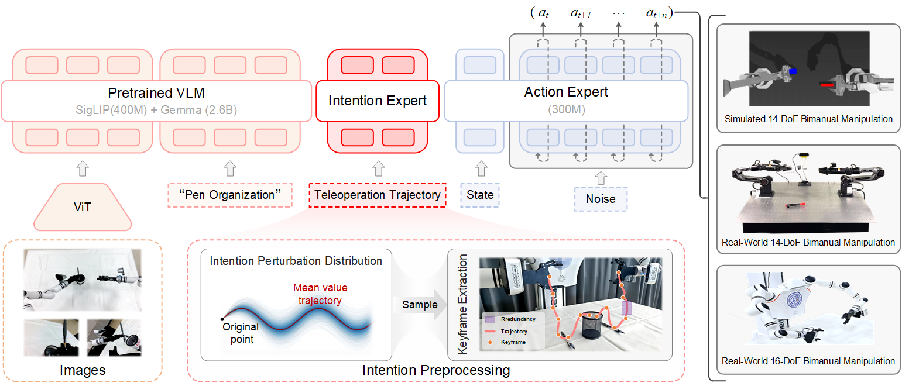

Adaptor: Advancing Assistive Teleoperation
with Few-Shot Learning
and Cross-Operator Generalization
1Jilin University 2IO-AI TECH
Video Presentation
Method
The Adaptor framework establishes a robust pipeline for intent generalization through two phases.
Phase I: Intention Preprocessing. We construct a perturbation distribution by injecting stochastic noise into expert trajectories to simulate suboptimal behaviors. Simultaneously, we employ a geometry-aware keyframe extraction mechanism to distill critical temporal information.
Phase II: VLA-Based Policy Learning. Processed trajectories are encoded by an Intention Expert and fused with semantic context from a pre-trained VLM. This conditions the Action Expert, which utilizes Flow Matching to generate precise control commands.
